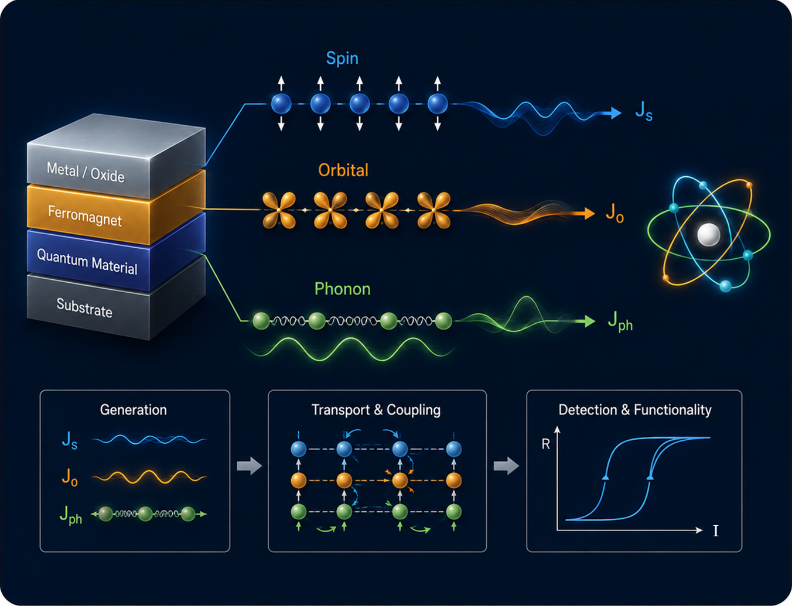
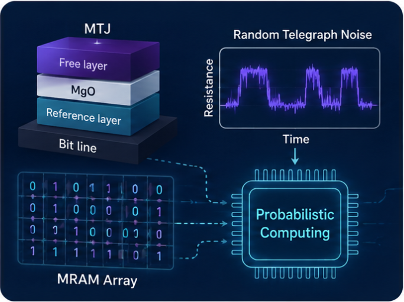
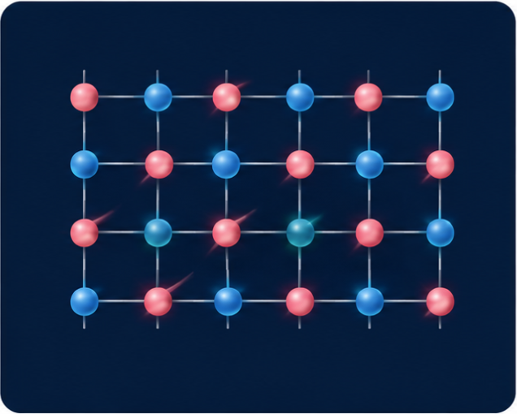

Depth-resolved magnetism in RuO₂
Low-energy muons probed the depth profile of magnetic order in thin films.
We study how spin, orbital motion and lattice vibrations carry and exchange angular momentum. We use that physics to design magnetic materials, memory devices and hardware for computing.
Explore research directions
Identify mechanisms for angular-momentum generation, transfer and dissipation.
Tune symmetry, interfaces and magnetic properties in thin films.
Measure switching, readout and variability in prototype devices.
Evaluate memory, sampling and inference at circuit and workload scale.
Feedback loop. Circuit requirements and device measurements feed back into materials design and fundamental questions about transport and switching.
How do charge currents generate and deliver angular momentum to a magnetic layer?
A spin–orbit-coupled conductor can convert part of a longitudinal charge current into a transverse spin current. Angular momentum absorbed by an adjacent ferromagnet changes its magnetization and, with suitable symmetry breaking and pulse conditions, can reverse it. Comparing channel resistivity, torque efficiency and magnetic anisotropy connects transport to practical switching.
Ta/Pt multilayer channels · IEEE Transactions on Magnetics (2025)An electric field can also generate a transverse flow of orbital angular momentum. Spin–orbit coupling can convert orbital into spin angular momentum in a multilayer. A research goal is to distinguish orbital contributions from spin Hall and interface effects using controlled material and thickness comparisons.
Orbital torque theory · Physical Review Research (2020)A current pulse transfers spin angular momentum into the free layer. The arrow shows an illustrative reversal under suitable switching conditions.
Magnon–Phonon–Electron Interconversion
Electrons carry charge and can transfer spin angular momentum. Magnons are quanta of collective spin waves, in which neighboring local moments precess with a phase difference. Phonons are quanta of lattice vibrations, in which atoms oscillate about their equilibrium positions. These modes can exchange energy and, where symmetry permits, angular momentum.
Coherent spin-wave handedness · npj Spintronics (2024)Exchange interactions allow spin transfer between itinerant electrons and magnetic excitations. Choi and colleagues reported magnetization switching driven by magnonic spin dissipation. A next question is how interfaces and the available magnetic modes set the balance between electronic and magnonic transfer.
Magnonic spin dissipation · Nature Communications (2025)Strain can modulate magnetic anisotropy, while magnetic dynamics can drive lattice motion through magnetostriction. Modes can hybridize when their frequencies, wave vectors and symmetries allow coupling. Electron–phonon scattering can also influence spin transport, as reported for the spin Hall effect in platinum.
Phonon skew scattering in Pt · Physical Review B (2018)Electrons drift along the channel. Local moments precess with a phase offset, while atoms vibrate about fixed sites. The dashed connector marks possible coupling between channels. The motion is schematic.
From magnetic tunnel junctions to memory arrays that participate in computation.
A magnetic tunnel junction (MTJ) encodes a bit in the relative orientation of its free and reference layers. Parallel and antiparallel configurations typically give lower and higher resistance, respectively. A three-terminal SOT design separates the write channel from the tunnel read path. Published Ta/Pt channel engineering provides a starting point for studying write current alongside retention, variability and read margin.
SOT-MRAM write-channel engineering (2025)In-memory computing uses stored states during computation to reduce data movement. Candidate operations include bitwise logic and accumulation. Practical comparisons should include sensing, peripheral circuits, conversion overhead and device variation at matched task accuracy.
External context · MRAM crossbar array (2022)The gold barrier separates the free and reference layers. Compare parallel alignment (typically lower resistance) with antiparallel alignment (typically higher resistance).
Parallel · lower resistance.
Use controllable fluctuations for sampling, inference and optimization.
Thermally activated switching in a low-barrier junction produces random telegraph resistance. A readout circuit can map these fluctuations to a binary output, and a control input can bias the fraction of time spent in each state. Dwell-time statistics and autocorrelation matter when deciding how quickly to sample the device.
External context · Integrated probabilistic computing (2025)Coupled p-bits use weighted interactions to sample candidate configurations. Optimization and probabilistic inference are candidate workloads. Benchmarking should account for sample correlations, circuit overhead and solution quality at a given time or energy budget.
A toy binary sampler illustrates how input bias changes the likelihood of a 1. The trace is generated in your browser.

Conceptual overview. For quantitative results, consult the linked papers.
Use symmetry and interfaces to design electrical control and readout.
Antiferromagnets can have ordered moments with little net magnetization. In altermagnets, crystal symmetry can permit momentum-dependent spin splitting despite magnetic compensation. Published RuO₂ thin-film studies offer distinct probes of spin splitting and depth-dependent magnetism. Growth conditions, strain and alternative signal origins remain important to check.
Depth-resolved RuO₂ magnetic order · Applied Physics Letters (2026)In structures with suitable broken inversion symmetry, Dzyaloshinskii–Moriya exchange can favor a specific handedness of neighboring moments. Chiral interlayer exchange has been reported in synthetic antiferromagnets. Changing layer sequences or comparing opposite handedness can help isolate the symmetry of the underlying interaction.
Chiral interlayer exchange · Nature Materials (2019)A mirror reflection reverses the handedness of a spin texture. Play the two mirror-related sequences to compare their opposite winding.

Conceptual overview. For quantitative results, consult the linked papers.
Low-energy muons probed the depth profile of magnetic order in thin films.
The study demonstrated a magnetization-switching mechanism driven by magnonic spin dissipation.
The multilayer channel design addressed resistivity and spin Hall conversion together.
Time-resolved measurements distinguished the handedness of coherent spin waves.
We welcome inquiries from students, researchers and collaborators interested in thin-film growth, magnetism and transport measurements, magnetic devices or hardware–algorithm co-design.
Tell us which research direction interests you and include a short summary of your background or proposed collaboration.
Contact AED Lab